Wstęp
Jest to gra dla dwóch graczy, podczas której papuga i lis ścigają się po pustyni. Gracze kierują swoją postacią wciskając szybko klawisz na klawiaturze. Zwierzę, które pierwsze dotrze do krawędzi ekranu, wygrywa.

Krok 1: Stwórz scenę i dodaj duszki
Zadania do wykonania
- Kliknij na scenę i dodaj tło z pustynią z katalogu Natura.
- Dodaj nowego duszka i wybierz kostium lwa z katalogu ze zwierzętami.
- Dodaj kolejnego duszka i wybierz kostium papugi.
Zmniejszją tak, aby była mniej więcej rozmiarów lwa.
Krok 2: Spraw, aby lew i papuga się poruszały
Chcemy, aby duszki poruszały się kiedy naciśniesz klawisz.
Zadania do wykonania
Na początek wybierzmy lwa i ustawmy, aby poruszał się o 4 kroki po wciśnięciu klawisza ‘L’
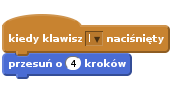
Teraz pora na papugę. Ustawmy, aby przesuwała się o 4 kroki po wciśnięciu klawisza ‘A’.
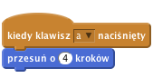
Przetestuj swój projekt
Wciśnij zieloną flagę
Czy lew i papuga poruszają się po ekranie, gdy wciskasz ‘A’ i ‘L’?
Zapisz swój projekt.
Krok 3: Rozpoczęcie wyścigu
Aby móc określić później, kto wygrał, musimy najpierw wiedzieć, kiedy wyścig się rozpoczął. Dodajmy przycisk Start.
Zadania do wykonania
- Dodaj nowego duszka z pliku. Wybierz przycisk z katalogu “things”.
- Przejdź do edycji kostiumu, napisz na nim ‘Start’ i wciśnij OK. Przesuń duszka na środek sceny.
Dodaj do niego skrypt, który pokazuje przycisk, kiedy gra jest uruchomiona:

Teraz chcemy, aby przycisk odliczał od 3 w dół i ogłaszał start wyścigu, a następnie się chował. Dodaj poniższy skrypt:
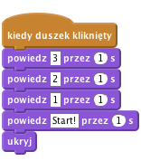
Przetestuj swój projekt
Wciśnij zieloną flagę
Czy widzisz odliczanie po kliknięciu przycisku? Czy przycisk znika po zakończeniu odliczania?
Zapisz swój projekt.
Chcemy, aby ścigający poruszali się tylko po rozpoczęciu wyścigu. Chcemy też wiedzieć, kiedy wyścig się zakończył. Będziemy potrzebować zmiennej do przechowywania tej informacji.
- Dodaj zmienną do wszystkich duszków i nazwij ją
wyścig. Odznacz pole przy niej, aby nie było jej widać na scenie. Teraz ustaw wyścig na 0, kiedy gra się rozpocznie. Dodaj ten krok do skryptu przycisku:
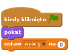
- Następnie ustaw zmienną wyścig zmieniała się na 1 po skończeniu odliczania.
Teraz musimy się upewnić, że lew i papuga mogą się ruszać tylko wtedy, kiedy zmienna wyścig jest ustawiona na 1. Kliknij na duszka z papugą. Dodaj blok kontroli do skryptu, który pozwala papudze ruszać się tylko wtedy, gdy zmienna wyścig = 1.
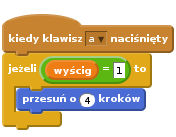
Zrób to samo dla lwa.
Przetestuj swój projekt
Wciśnij zieloną flagę
Czy lew i papuga ruszają się tylko po zakończeniu odliczania?
Teraz chcemy notować, kto wygrał wyścig i usuwać tę informację po zakończeniu gry, aby można było zacząć od nowa.
Zapisz swój projekt.
Krok 4: Kończenie wyścigu
Zadania do wykonania
Dodaj blok do skryptu papugi, który ustawia zmienną wyścig na 0, kiedy papuga dotknie brzegu ekranu.
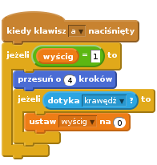
Teraz chcemy, aby papuga dała nam znać, czy wygrała. Nagraj nowy dźwięk dla papugi, który będzie odegrany, jeżeli papuga wygra. Przejdź na kartę
dźwiękiduszka i nagraj odgłos zwycięstwa!Dodaj do skryptu komendę, która
zagrato nagranie po wygranej:![kiedy klawisz [a v] naciśnięty
jeżeli <(wyścig) = [1]> to
przesuń o (4) kroków
jeżeli <dotyka [krawędź v]?> to
ustaw [wyścig v] na (0)
zagraj dźwięk [nagranie1 v]
powiedz [Papuga wygrała!] przez (3) s](894c7acd1047fb9ed2c3622dc6294aface6c3a2e.png)
Powtórz to samo dla lwa.
Przetestuj swój projekt
Wciśnij zieloną flagę
Czy działa rozpoczynanie wyścigu po wciśnięciu przycisku? Można się ścigać wciskając przyciski ‘A’ i ‘L’?
Czy duszki dobrze ogłaszają, który z nich wygrał?
Zapisz swój projekt.
Krok 5: Restartowanie gry
Po zakończeniu wyścigu musimy powiedzieć wszystkim duszkom, że to koniec i zresetować grę, aby mogła się zacząć od nowa.
Duszek, który wygra, musi ogłosić swoje zwycięstwo.
Zadania do wykonania
Kliknij na papugę i dodaj do skryptu ogłaszanie końca wyścigu po wygranej.
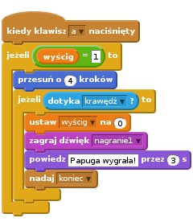
Teraz musimy dodać nowy skrypt, który nasłuchuje, czy wyścig został zakończony i jeżeli tak, to przesuwa papugę na linię startu.
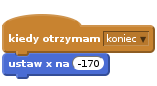
- Dodaj takie same skrypty dla lwa. W przypadku tego drugiego przetestuj inne wartości dla x, aby lew i papuga byli równo ustawieni na starcie.
Chcemy też, aby lew i papuga byli równo ustawieni po rozpoczęciu wyścigu, więc dodaj do obu duszków poniższy skrypt, który ustawia je równo po wciśnięciu flagi:
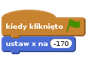
Przejdź do duszka przycisku i dodaj skrypt, który go pokazuje po otrzymaniu komunikatu, że wyścig się zakończył.
Przetestuj swój projekt
Wciśnij zieloną flagę
Możesz się ścigać z kolegą, kiedy jedno z was kieruje papugą wciskając ‘A’, a drugie kieruje lwem wciskając ‘L’?
Zapisz swój projekt.
Wyzwanie 1: Dodaj dopalacz
- Spróbuj dodać dopalacz, który każdy duszek może użyć tylko raz podczas wyścigu. Dopalacz przesuwa postać w przód o 30 kroków.
- Dodaj nowy kostium z płomieniem za każdym duszkiem i ustaw, aby się pokazywał, kiedy dopalacz zostanie użyty.
Nagraj następny dźwięk, który będzie odegrany po użyciu dopalacza.
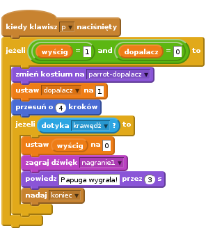
Przetestuj swój projekt
Zapisz swój projekt.
Wyzwanie 2: Stwórz własne bloki, aby uprościć swój skrypt
Ten sam kod, który sprawdza, czy wyścig się skończył jest używany teraz w dwóch miejscach dla każdego duszka: kiedy duszek normalnie się porusza i kiedy rusza się z dopalaczem. Możemy uprościć nasz skrypt tworząc własny blok, w którym znajdą się bloki, które do tej pory powtarzały się w wielu miejscach.
- Pokaż skrypt papugi.
- Wybierz paletę
Więcej blokówi kliknij na przyciskStwórz blok. - Nadaj nowemu blokowi nazwę wpisując “zakończony” w różowe pole. Następnie kliknij OK.
- Zauważ, że blok
definiuj zakończonypojawił się w oknie ze skryptami. Przeciągnij go na puste miejsce tak, aby nie zasłaniał innych skryptów. Odłącz blok
jeżelidotyka krawędź?toi przeciągnij go podłączając pod blokdefiniuj zakończony.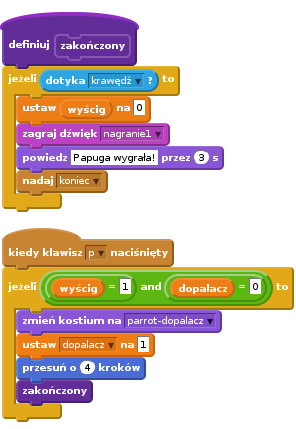
Czy możesz przeciągnąć blok zakończony z palety i użyć go jak każdego innego bloku?
Usuń pozostałe bloki jeżelidotyka krawędź?to z twojego skryptu i wstaw w ich miejsce twój blok zakończony.
Czy to sprawiło, że twój kod jest teraz łatwiejszy do przeczytania? Czy możesz utworzyć podobny blok dla duszka lwa?
Przetestuj swój projekt
Zapisz swój projekt.
Brawo! To by było na tyle, teraz możesz się cieszyć swoją grą!
Nie zapomnij, że możesz podzielić się swoją grą ze swoimi przyjaciółmi i rodziną. Żeby to zrobić, kliknij menu Udostępnij.